Vision
To become a leading university-affiliated center of evidence, policy, and innovation on displacement, dryland systems, food security, and climate resilience in Somalia and the Horn of Africa.
East Africa University, Somalia • Displacement • Drylands • Food Security • Climate Resilience
The Institute for Displacement and Dryland Research (IDDR), affiliated with East Africa University, Somalia, is a research, policy, and capacity development platform focused on internal displacement, dryland livelihoods, food security, nutrition, pastoral mobility, climate resilience, and durable solutions in Somalia and the Horn of Africa.
About IDDR
The Institute for Displacement and Dryland Research (IDDR) generates evidence, policy analysis, and practical solutions to address displacement, dryland vulnerability, food insecurity, undernutrition, climate shocks, environmental degradation, and livelihood disruption.
The institute works at the intersection of humanitarian response, rural development, climate adaptation, and academic research. Through its affiliation with East Africa University, Somalia, IDDR supports government institutions, development partners, universities, and communities with technical evidence, policy guidance, training, and strategic research products.
To become a leading university-affiliated center of evidence, policy, and innovation on displacement, dryland systems, food security, and climate resilience in Somalia and the Horn of Africa.
To generate high-quality research, policy guidance, and capacity development under East Africa University, Somalia, improving the lives of displaced, pastoral, agro-pastoral, and dryland communities.
Evidence-driven, locally grounded, policy-oriented, and aligned with the academic and public service mandate of East Africa University, Somalia.
Thematic Areas
University-based research on IDP protection, settlement systems, land access, self-reliance, social cohesion, and long-term reintegration pathways.
Research on pastoral mobility, agro-pastoral livelihoods, livestock systems, rangeland management, water access, and rural economic recovery.
Evidence generation on household food insecurity, child undernutrition, maternal nutrition, diet quality, and nutrition-sensitive programming.
Applied research on drought, floods, climate adaptation, early warning, environmental degradation, and resilience investment in dryland settings.
Analysis of gendered impacts of displacement, child nutrition, education disruption, protection risks, care burdens, and inclusive recovery.
Policy briefs, strategic frameworks, executive training, data analysis, institutional strengthening, and technical advisory services.
Policy Briefs
A policy brief produced under IDDR, East Africa University, Somalia, focusing on self-reliance, rural recovery, settlement planning, and sustainable reintegration for IDPs.
A forthcoming IDDR policy brief on climate shocks, pastoral mobility, drought resilience, livelihood disruption, and rural displacement prevention.
A forthcoming IDDR policy brief on food insecurity, child undernutrition, maternal vulnerability, and service gaps in displacement settings.
Research and Publications
People
IDDR brings together researchers, policy specialists, fellows, and technical experts working on displacement, dryland livelihoods, food security, nutrition, climate resilience, and durable solutions.
Director / Principal Investigator
Dr. Mohamed K. Ali is the Director & PI focusing on nutrition, food security, internal displacement, health, agrifood systems, and climate change. He received his PhD from Dalarna University, Sweden. His work focuses on undernutrition and household food security among internally displaced communities in Somalia.
Google Scholar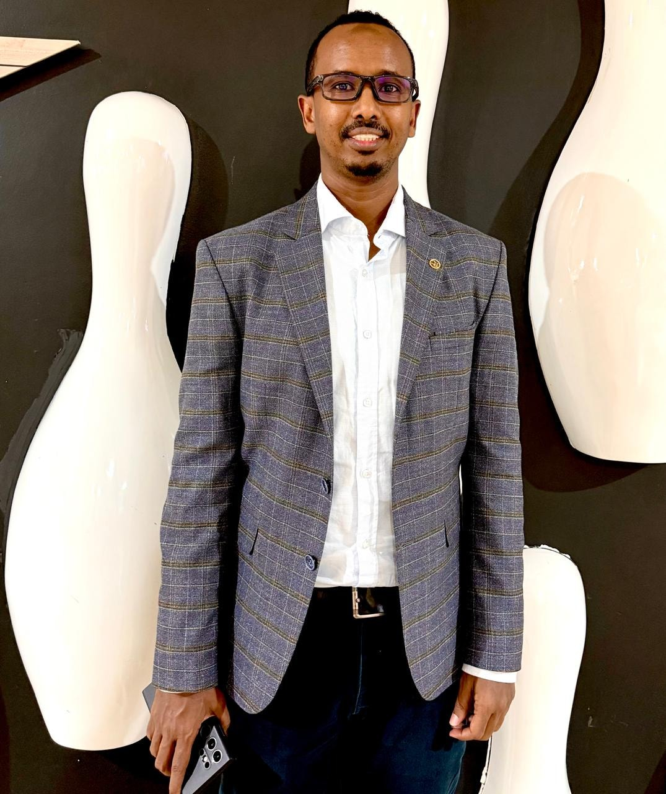
Displacement and Durable Solutions
Dr. Farhia's research focuses on internal displacement, settlement systems, self-reliance, and durable solutions policy.
Google Scholar
Agricultural Economist
Dr. Mohamud Yasin Artan is an agricultural economist who earned his PhD from Universiti Putra Malaysia. His work focuses on climate change, pastoralism, agrifood systems, food security, and rural livelihoods in fragile and dryland contexts.
Google Scholar
Dryland Systems and Climate Resilience
Conducts research on drought, rangeland systems, pastoral mobility, climate adaptation, and resilience investment.

Governance and Policy Analysis
Develops policy briefs, institutional frameworks, strategic notes, and government-facing advisory products.

Data, Field Research and Publications
Supports literature reviews, data analysis, field coordination, knowledge management, and publication preparation.
Training and Capacity Development
Institutional Engagement
As an institute affiliated with East Africa University, Somalia, IDDR seeks to collaborate with government institutions, UN agencies, development partners, NGOs, universities, research networks, and local communities to advance evidence-based solutions for displacement, dryland resilience, food security, and durable development.
The institutions listed below represent current, past, potential, or thematically relevant stakeholders in IDDR’s areas of work. Their inclusion does not imply formal partnership unless specifically stated.
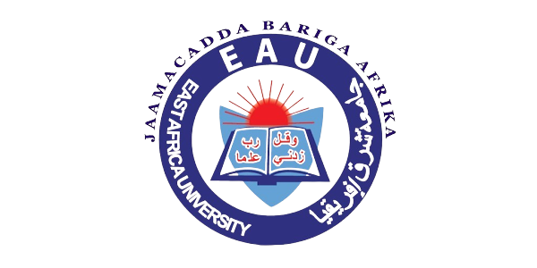
East Africa University, Somalia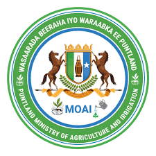
Ministry of Agriculture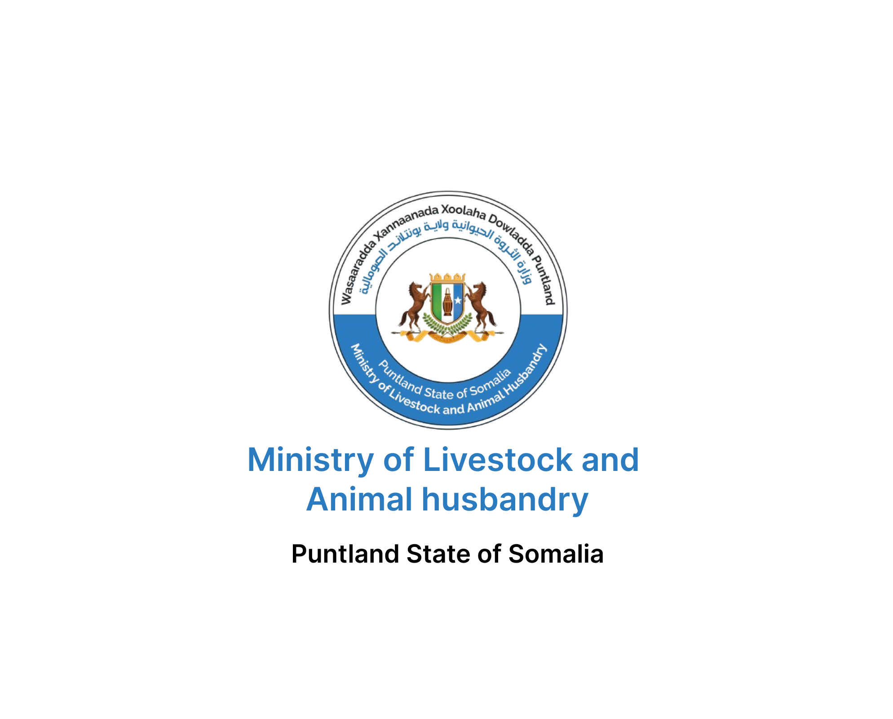
Ministry of Livestock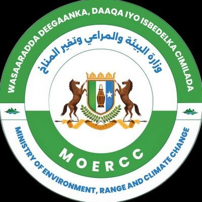
Ministry of Environment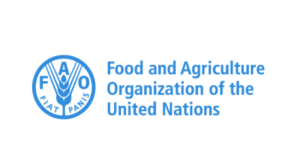
FAO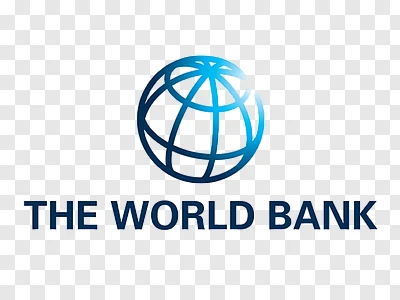
World Bank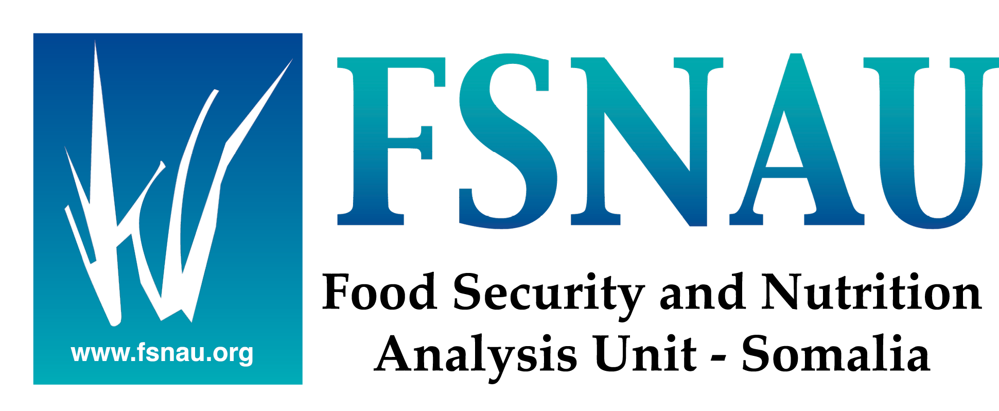
FSNAU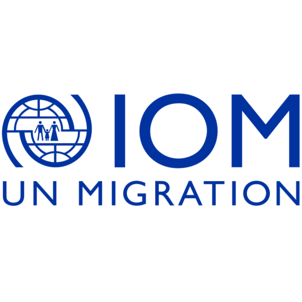
IOM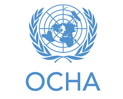
OCHA UNICEF
UNICEF
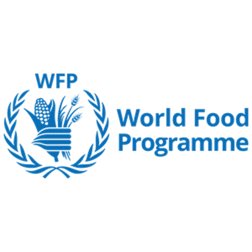
WFPContact
For partnerships, research collaboration, training, policy advisory support, fellowships, and institutional engagement with IDDR at East Africa University, Somalia, contact the IDDR coordination team.